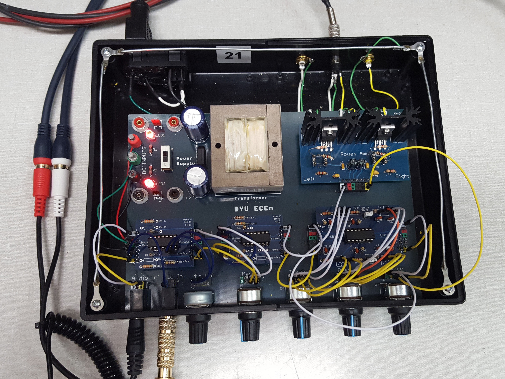
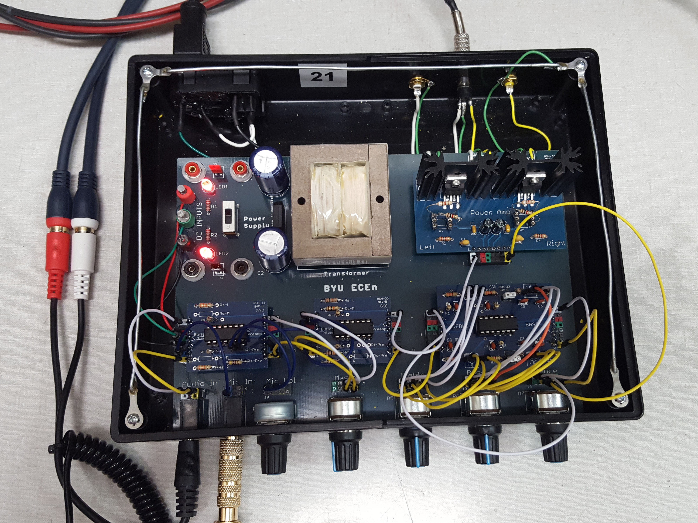

Hello there!
My name is Justin B. Christensen.

I am a Master's student at the MIT Media Lab.
I create interactive and immersive displays and experiences.
I am a designer, maker, perfectionist, and (lowercase "i") imagineer.
Projects


 



About Me
I am a Master's student studying and researching at the MIT Media Lab in Cambridge, MA. I combine my skills in optics, hardware, and software to create immersive and interactive experiences. I explore holography and other forms of 3D display technology to make things come to life in a way not before possible. I also design and fabricate opto-mechanical systems using simple structural, flexural, and actuating building blocks. I collaborate with other students to make designs, systems, and devices that will change and impact the world for the better. I am constantly being introduced to new people and ideas that I will continue to work with to create, improve, and invent new things.
Before coming to MIT, I obtained a Bachelor's degree in electrical engineering from Brigham Young University in Provo, UT. There, I developed skills in embedded and object oriented programming, electronics design, as well as optical engineering. I did research under Daniel Smalley in the Electro-Holography Lab where I designed and fabricated acousto-optic spatial light modulators in the cleanroom to be used in the holographic video monitor. I was also exposed to other forms of 3D display technologies, such as the photo-phoretic trap volumetric display. These experiences ignited my desire to continue pursuing these and other passions at MIT.
As I continue on in my research, I hope to continue to discover new ways to implement holography and other 3D display technologies and push the boundaires of their capabilities. I want to spread my enthusiasm for these technologies to many people around the world so that they, too, may join me in my efforts. I want to utilize my knowledge of these technogies along with my skills in programming, electronics, fabrication, and design to make more immersive and interactive experiences and enable new levels and types of storytelling. Industries that I believe can enable me to make these dreams come true vary, but I am very interested in working in the entertainment industry, especially in the realm of consumer-facing product design, such as consumer electronics, games, and theme park attractions.
Contact
If you would like to get in touch, please email me here.
If you are interested, here is a copy of my resume.